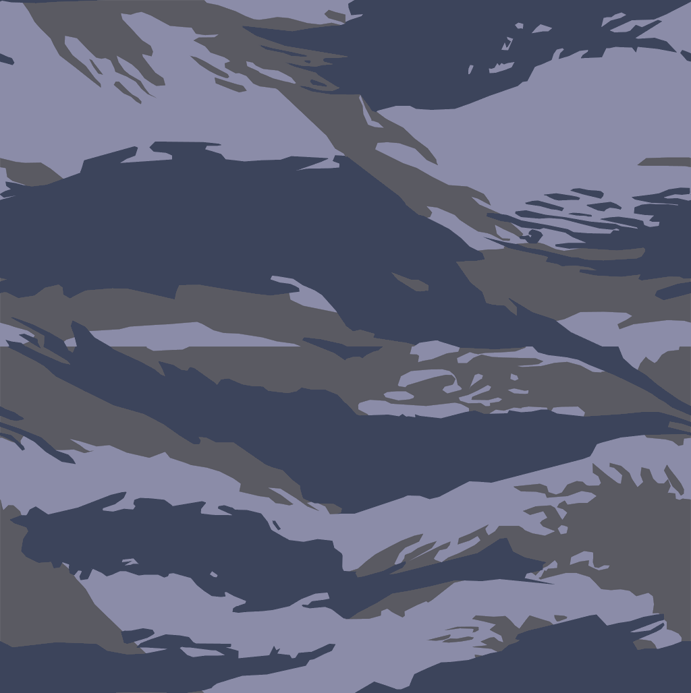

Mis Habilidades
Comencé mi recorrido como programador hace 5 años, a lo largo de mi preparación he trabajado con
C++, C#, Java, HTML, CSS, SQL y aunque no estoy muy familiarizado
también he interactuado con Phyton, PHP, Javascript, Go, y Perl,
algunos de los programas que he utilizado son: Android Studio,
Unity (Para el desarrollo de aplicaciones de Realidad Aumentada),
Spark AR, Wondershare Filmora (Edición de video), SQL Developer y
Dreamweaver.
Domino 2 idiomas, Inglés y Español, comencé a aprender Francés, pero no podría considerarme experto.
Me considero un buen diseñador y editor, en mi entorno de trabajo trato de mantener todo bien organizado para cumplir mis metas en el menor tiempo posible.